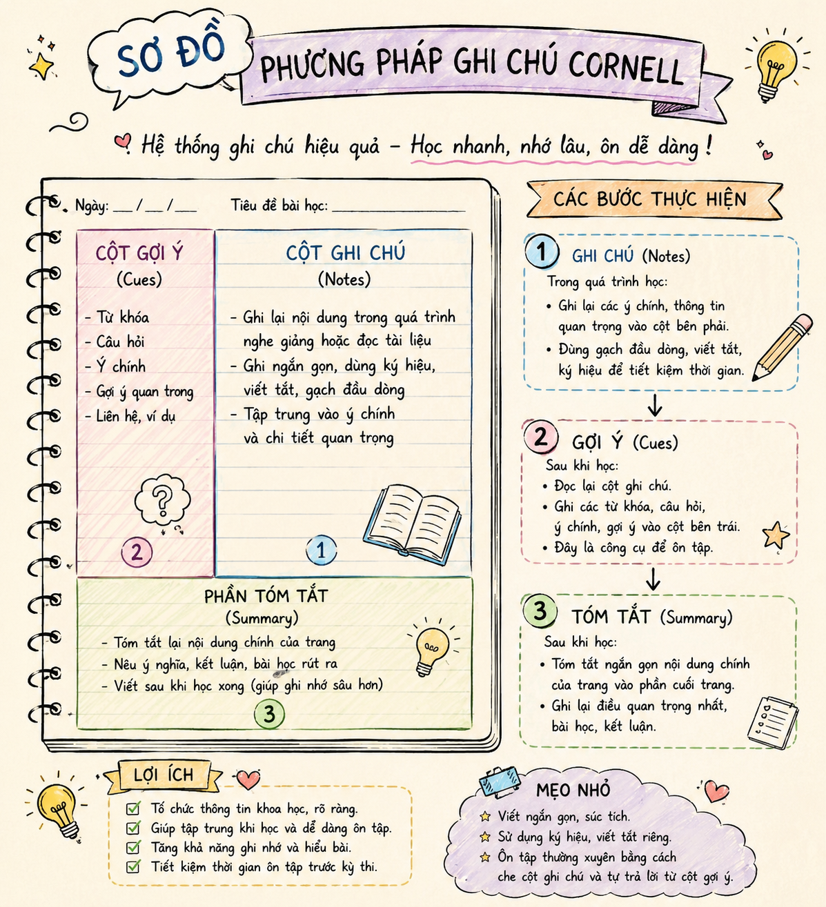

"Hãy đi sâu vào những sáng tác của nhân dân, nó trong lành như nguồn nước ngọt ngào, tươi mát, róc rách từ khe núi chảy ra."
— Mắc-xim Go-rơ-ki (Maksim Gorky)
Văn học dân gian (VHDG) là những sáng tác nghệ thuật ngôn từ của nhân dân lao động, ra đời từ thuở xa xưa và vẫn tiếp tục phát triển cho đến hôm nay, được phổ biến chủ yếu bằng phương thức truyền miệng.
Các tính chất nổi bật của Văn học dân gian:
📌 Các hướng lựa chọn đề tài gợi ý:
Làm thế nào để biết một đề tài có phù hợp và phát huy được sở trường của bản thân hay không?
Cần trả lời 4 câu hỏi cốt lõi:
💡 Ví dụ thực tế (Đề tài 4 - Lễ hội dân gian):
Mục tiêu: Phát triển năng lực nghiên cứu qua trải nghiệm thực tiễn lễ hội; mở rộng hiểu biết về giá trị VHDG và bồi dưỡng tình yêu văn hóa dân tộc.
Nội dung trọng tâm: Các đặc điểm nổi bật của lễ hội; dấu ấn tác phẩm VHDG trong các hoạt động lễ hội; ý nghĩa và giá trị văn hóa đối với đời sống cộng đồng.
Kế hoạch nghiên cứu giúp sắp xếp các bước tiến hành theo thời gian hợp lý. Dưới đây là bảng mẫu kế hoạch nghiên cứu:
| Các hoạt động | Dự kiến kết quả, sản phẩm | Thời gian | Người thực hiện |
|---|---|---|---|
| Tìm hiểu lễ hội qua tài liệu (sách, internet) | Tư liệu sưu tầm về lễ hội và tác phẩm VHDG | 1 buổi | Cá nhân |
| Tham khảo ý kiến chuyên gia | Bản ghi chép phỏng vấn chuyên gia | 1 buổi | Nhóm |
| Tham gia trải nghiệm lễ hội & Xây dựng hồ sơ | Bản ghi chép thực địa + Danh mục tài liệu tham khảo | 2 ngày | Nhóm |
Các nguồn sưu tầm chính gồm sách báo thư viện và thông tin trên Internet qua từ khóa chuẩn xác. Lưu ý luôn ghi chép trích dẫn nguồn minh bạch.
📖 Danh mục tài liệu tham khảo gợi ý trong SGK:
Phỏng vấn nhà nghiên cứu văn hóa Nguyễn Hùng Vỹ về Hò khoan Lệ Thủy
Hỏi: Những nét đẹp của hò khoan Lệ Thủy là gì, thưa ông?
Trả lời (Chuyên gia Nguyễn Hùng Vỹ): Là một hệ thống dân ca, hò khoan Lệ Thủy tập hợp một lúc nhiều giá trị: sự gắn bó tươi ròng với thực tiễn, tính trữ tình đậm đà, tính phổ biến toàn dân và khả năng bao dung nhiều phong cách khác trong tiếp biến văn hóa...
Hỏi: Theo ông, vì sao hò khoan Lệ Thủy được bảo tồn và phát triển cho đến hôm nay?
Trả lời: Thứ nhất là nhân dân yêu quý những sáng tạo tinh thần của mình một cách bền vững. Thứ hai là chính sách văn hóa hướng đến nhân dân của Nhà nước. Thứ ba là cuộc sống thời bình tạo môi trường thuận lợi để nhu cầu hát được cất lên.
Trải nghiệm thực tiễn như tham dự Lễ hội Gióng (đền Phù Đổng), quan sát nghi thức tế Thánh, rước nước, rước cờ lệnh... giúp bổ sung tri thức sống động cho nghiên cứu.
Hãy nêu các mục chính cần chuẩn bị trong Phiếu ghi chép trải nghiệm lễ hội.
Mẫu Phiếu Ghi Chép Trải Nghiệm gồm 5 nội dung chính:
Dùng giấy nhớ nhiều màu dán bên lề tài liệu để lưu lại ý chính, từ khóa và nhận xét cá nhân trong quá trình đọc.
Hệ thống hóa thông tin bằng từ khóa và hình vẽ, giúp bao quát bức tranh tổng thể và kích thích tư duy hai bán cầu não.
Chia trang ghi chép làm 3 phần: Cột thông tin cụ thể (phải), Cột ý chính/câu hỏi (trái), Hàng tóm tắt ở cuối trang.
Hình minh họa 1: Phương pháp ghi chú Cornell (h1.png)

[Khung hiển thị hình ảnh h1.png: Sơ đồ Phương pháp ghi chú Cornell]Hội Gióng ở đền Phù Đổng và đền Sóc đã được UNESCO công nhận là Di sản văn hóa phi vật thể đại diện của nhân loại vào năm 2010. Đây là một "bảo tàng sống" lưu giữ ký ức lịch sử chống ngoại xâm độc đáo của dân tộc Việt Nam.
Tự tay lập kế hoạch và triển khai một báo cáo nghiên cứu nhỏ về các câu ca dao hoặc truyền thuyết tại địa phương em đang sống, sử dụng các công cụ ghi chú hiện đại như Cornell hay phần mềm sơ đồ tư duy (Mindmap).
Trả lời 10 câu hỏi trắc nghiệm để chinh phục đỉnh cao tri thức VHDG!
Bài (Lập khung dàn ý báo cáo):
Hãy xây dựng khung dàn ý 3 phần hoàn chỉnh cho báo cáo nghiên cứu về đề tài: "Hình tượng con cò trong ca dao truyền miệng Việt Nam".
Lời giải chi tiết Dàn ý Báo cáo: